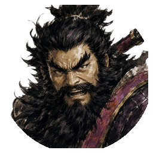
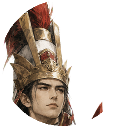
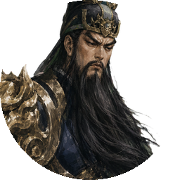

当前美术基底
角色资产以深色三国水墨半身像为主，强调棱角笔触、清晰剪影、黑红金控制色。P0 UI 组件偏浅石瓷纸底、细边框与低装饰密度。军令卡概念图提供了战桌、地图、军略器物的题材感，但全局 UI 需要比卡牌展示更轻。
UI Style Exploration / v01
基于已确认的现代历史策略方向、水墨武将立绘、朱红与金铜点缀、轻量面板规范，提出四个可继续深化的界面视觉方向。
角色资产以深色三国水墨半身像为主，强调棱角笔触、清晰剪影、黑红金控制色。P0 UI 组件偏浅石瓷纸底、细边框与低装饰密度。军令卡概念图提供了战桌、地图、军略器物的题材感，但全局 UI 需要比卡牌展示更轻。
不是推翻现有方向，而是在同一套三国项目语境里比较不同“气质配比”：更清爽、更战术、更卡牌、更沙盘。后续可选择一版主方向，再拆出主界面、战斗 HUD、军令市场与结算页的正式效果图。
Direction A
最贴近全局规范的主推方向：浅石瓷面板、淡地图底纹、细墨线、少量金铜按钮。适合长期运营页面、阵容、关卡、局外成长。

张飞 护盾 / 反击
周瑜 灼烧 / 范围Direction B
更贴近武将立绘的暗墨战术版：深墨底、冷青灰信息层、朱红危险提示。适合战斗 HUD、Boss 预警、技能释放。

Direction C
面向军令市场和奖励选择的卡牌经营版：朱红主状态、金铜确认、玉青作为可购买/可融合提示。比旧概念图更轻，保留购买决策的仪式感。
Direction D
偏“战前推演”的沙盘版：地图与路线是第一视觉信号，面板像军务夹层浮在地图上。适合关卡选择、布阵、路线目标选择浮层。
主方向：采用 A「清瓷战图」作为全局设计系统骨架，保证长期使用的清爽与可读。
战斗强化：战斗内叠加 B「墨锋军务」的暗墨 HUD、预警和技能释放状态，让武将立绘更融入。
军令模块：军令市场、奖励、图鉴使用 C「朱令金章」的卡牌层级，但限制金红面积。
地图/布阵：关卡与路线选择吸收 D「沙盘营帐」的地图节点和路线表达。